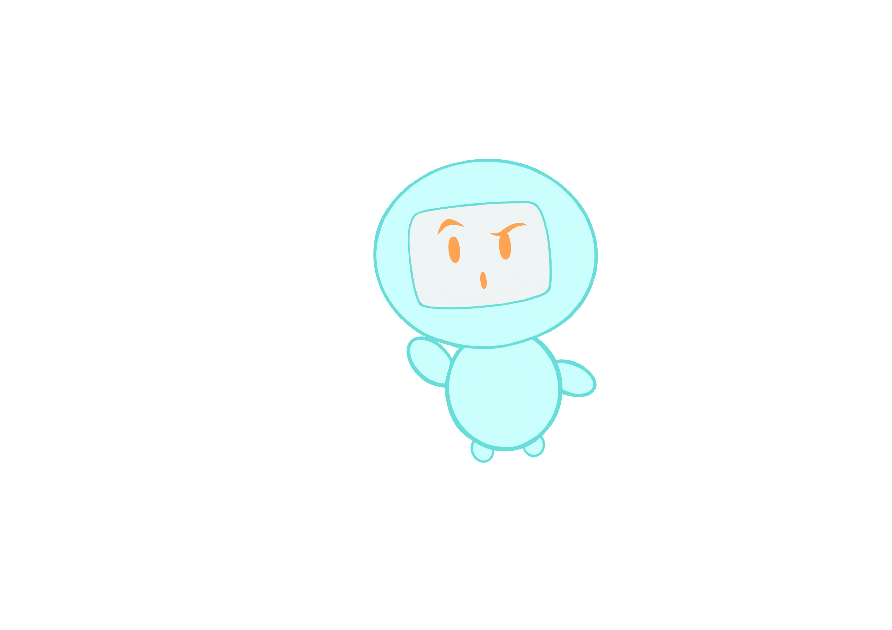

<div class="details-container">
    <div class="details-item">
        <h2>Uncommon Sense</h2>
        <p><strong>What: </strong>
            From world leaders deciding whether to launch nuclear missiles, to students deciding
            where to apply to college, turning information into effective decisions is hard, and it
            matters. Uncommon Sense is a program for inquisitive high schoolers interested in
            learning ways to challenge their beliefs and improve their decisions-making. We aim to
            teach not what to think, but how to think critically. To do this, we immerse students in
            the discoveries of cognitive science, statistics, philosophy, decision theory, and more,
            and we support students in applying these ideas to help solve global problems and
            achieve their own goals. </p>

        <div class="details-container">
            <div class="item">
                <p><strong>Who: </strong>Grades 9-12
                </p>
                <p><strong>When: </strong>
                    From 4-5pm PDT every Wednesday starting on September 23rd. Come to our information
                    session on September 30th!</p>
                <p><strong>Where: </strong>Online. Join us from anywhere.</p>
                <p><strong>Cost: </strong> The first month is free! After that, it's $20 per month with scholarships
                    readily available!</p>
                <a
                    href="https://docs.google.com/forms/d/e/1FAIpQLSfR2lw8nR5O6m5yJoN__JdJtjfsAE4-13kOIC1IRj7NBlAVzw/viewform"><button
                        class="action-button largebutton">Sign Up</button></a>
            </div>
            <div class="item">
                
            </div>
        </div>
    </div>
</div>